PORTOFOLIO ANISSA ZUHRITA
PORTFOLIO OF ANISSA ZUHRITA
Spesialis GIS & Penginderaan Jauh | Analis Lingkungan
GIS & Remote Sensing Specialist | Environmental Impact Analyst
PROFIL
PROFILE
Spesialis GIS dan Penginderaan Jauh dengan pengalaman profesional mendukung 40+ proyek lingkungan dan pembangunan melalui pengelolaan dan analisis data spasial, interpretasi citra satelit, pemetaan, validasi lapangan, serta penyusunan laporan dan dokumen teknis. Berpengalaman menggunakan GIS untuk mendukung kebutuhan proyek infrastruktur, perkebunan, perumahan, minyak dan gas, serta kajian lingkungan, termasuk penyusunan AMDAL, UKL-UPL, DELH, dan kajian rona lingkungan awal.
Memiliki keahlian dalam pengelolaan database spasial, analisis dan visualisasi data, digitasi, integrasi data spasial dan nonspasial, serta pengolahan citra penginderaan jauh menggunakan QGIS, ArcGIS, Google Earth Engine, dan Python. Terbiasa mengintegrasikan citra satelit, data lapangan, data lingkungan, dan data iklim untuk menghasilkan informasi spasial yang mendukung evaluasi kondisi lingkungan, pemantauan perubahan tutupan/penggunaan lahan, serta pengambilan keputusan berbasis data.
Meraih gelar Magister Penginderaan Jauh dari Universitas Gadjah Mada, dengan pengalaman riset pada pemetaan karbon dan biomassa, pemantauan lingkungan, variabilitas iklim, dan pemodelan hidrologi. Memiliki kemampuan komunikasi teknis dan kolaborasi lintas disiplin, serta pengalaman sebagai pembicara dan presenter dalam kegiatan pelatihan dan forum akademik di bidang GIS, penginderaan jauh, dan lingkungan.
GIS and Remote Sensing Specialist with professional experience supporting 40+ environmental and infrastructure development projects through spatial data management and analysis, satellite imagery interpretation, thematic mapping, field ground-truthing, and statutory technical reporting. Experienced in applying GIS to support infrastructure, agro-industrial plantations, residential estates, oil & gas, and environmental impact assessments, including AMDAL (EIA), UKL-UPL (EMP), DELH (Environmental Evaluation), and environmental baseline studies.
Proficient in spatial database management, data analysis and visualization, digitization, spatial and non-spatial data integration, and remote sensing image processing using QGIS, ArcGIS, Google Earth Engine, and Python. Adept at synthesizing satellite imagery, field measurements, environmental parameters, and climate data to generate robust spatial insights that inform environmental condition evaluations, land use/cover change monitoring, and evidence-based decision-making.
Holds a Master of Science (M.Sc) in Remote Sensing from Universitas Gadjah Mada, with research experience spanning carbon & biomass mapping, environmental monitoring, climate variability, and hydrological modeling. Equipped with strong technical communication and multidisciplinary collaboration skills, alongside proven experience as an invited speaker and presenter in technical training programs and academic forums within GIS, remote sensing, and environmental disciplines.
PENDIDIKAN & SERTIFIKASI
EDUCATION & CERTIFICATIONS
Universitas Gadjah Mada
Magister (M.Sc) Penginderaan Jauh
Master of Science (M.Sc) in Remote Sensing
Universitas Negeri Padang
Sarjana Sains Geografi
Bachelor of Science (B.Sc) in Geography
SMA Negeri 1 Kota Jambi
Matematika dan Ilmu Alam
Mathematics and Natural Sciences
- Pemakalah — The 7th International Conference of Geography and Disaster Management (ICGDM 2025).
- Pemakalah — National Geography Seminar VI (2025).
- Narasumber — GE-ONIT (Geophysics Online Training) 2026
EAGE Student Chapter Universitas Brawijaya | Topik: “Remote Sensing for Environmental Monitoring”
- Presenter — The 7th International Conference of Geography and Disaster Management (ICGDM 2025).
- Presenter — National Geography Seminar VI (2025).
- Invited Speaker — GE-ONIT (Geophysics Online Training) 2026
EAGE Student Chapter Universitas Brawijaya | Topic: “Remote Sensing for Environmental Monitoring”
KEAHLIAN TEKNIS
TECHNICAL SKILLS
Software, Tools Geospasial & Pemrograman:
Software, Geospatial Tools & Programming:
PENGALAMAN KERJA
WORK EXPERIENCE
Ringkasan Peran: Sebagai Analis GIS, saya bertanggung jawab atas seluruh pipeline produksi data spasial dalam penyusunan dokumen lingkungan hidup mulai dari akuisisi dan pengolahan data, analisis spasial multivariabel, hingga produksi peta teknis yang menjadi lampiran resmi dan wajib dokumen. Selama lebih dari dua tahun, saya terlibat dalam lebih dari 50 proyek yang tersebar di Provinsi Jambi dan Sumatera Selatan, mencakup lima sektor industri. Peta yang saya hasilkan bukan sekadar output visual, melainkan berfungsi sebagai instrumen analisis yang menentukan kesesuaian lokasi proyek terhadap tata ruang dan regulasi lingkungan, serta menjadi dasar perencanaan pengelolaan dan pemantauan dampak.
Tentang Dokumen Lingkungan Hidup: Dokumen lingkungan merupakan instrumen regulasi untuk memastikan suatu kegiatan telah mempertimbangkan dan mengelola dampak lingkungan. Saya berpengalaman dalam penyusunan dokumen AMDAL, UKL-UPL, DPLH, DELH, serta berbagai dokumen teknis pendukung lingkungan. Seluruh peta yang saya hasilkan memenuhi standar kartografi KLHK dan digunakan sebagai lampiran resmi dalam proses perizinan dan pengelolaan lingkungan.
Beberapa Sektor yang Dikerjakan:
Role Overview: As GIS Analyst, I led the spatial data production pipeline for statutory environmental impact assessments—ranging from satellite and geospatial data acquisition, multivariable spatial modeling, to cartographic cartography compliant with Ministry of Environment and Forestry (KLHK) standards. Over two-plus years, I contributed to 50+ projects across Jambi and South Sumatra covering five major industrial sectors. Maps produced served as foundational analytical instruments establishing regulatory zoning conformity and underpinning environmental mitigation and monitoring frameworks.
Statutory Environmental Documents: Indonesian environmental impact frameworks ensure operations prevent and mitigate ecological harm. I have supported the technical spatial development of AMDAL (EIA), UKL-UPL (EMP), DELH (Environmental Evaluation), and technical feasibility studies, producing legally binding thematic annex maps for government licensing approval.
Selected Sectors Handled:
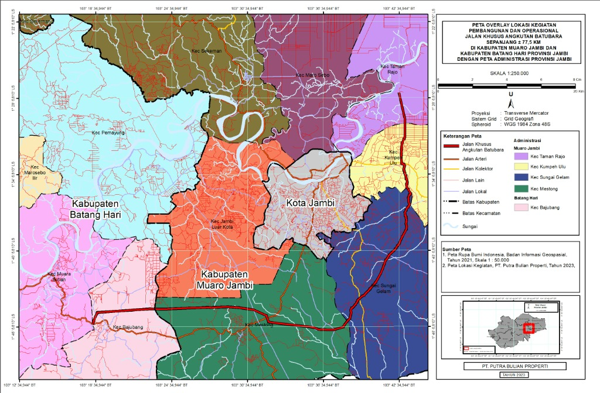
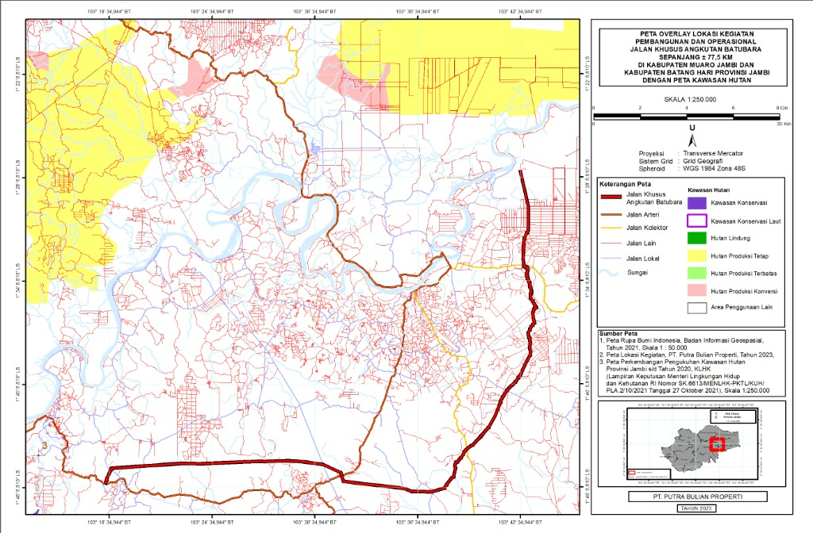
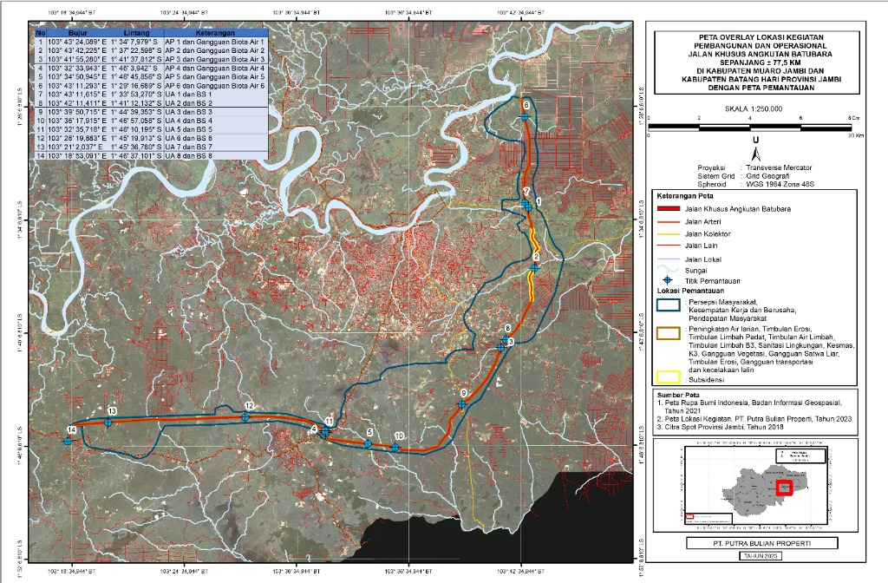
Konteks Proyek
Penyusunan AMDAL untuk rencana pembangunan dan operasional jalan khusus angkutan batubara sepanjang ±77,5 km yang melintasi Kabupaten Muaro Jambi dan Kabupaten Batang Hari. Rencana jalan menghubungkan wilayah Taman Rajo – Kumpeh Ulu – Sungai Gelam – Mestong – Bajubang.
Proyek ini dilatarbelakangi oleh kebutuhan untuk menata sistem pengangkutan batubara di Provinsi Jambi, terutama untuk mengurangi persoalan yang timbul dari penggunaan jalan umum, seperti kemacetan, kerusakan jalan, dan risiko kecelakaan lalu lintas. Karena itu, proyek ini tidak hanya merupakan pembangunan infrastruktur transportasi, tetapi juga berkaitan dengan penataan aktivitas angkutan batubara dan pengelolaan dampak lingkungan di tingkat daerah.
Konteks Kebijakan & Kerangka Regulasi
Rencana pembangunan jalan khusus ini tidak berdiri sendiri. Kegiatan tersebut berada dalam kerangka kebijakan daerah mengenai pengangkutan batubara, penyelenggaraan jalan khusus, serta ketentuan perlindungan dan pengelolaan lingkungan hidup.
- Peraturan Daerah Provinsi Jambi No. 13 Tahun 2012: tentang Pengaturan Pengangkutan Batubara dalam Provinsi Jambi. Menjadi salah satu dasar pengaturan aktivitas pengangkutan batubara di Provinsi Jambi dan konteks munculnya kebutuhan penataan jalur angkutan batubara.
- Peraturan Daerah Provinsi Jambi No. 1 Tahun 2015: tentang Penyelenggaraan Jalan Khusus. Mengatur penyelenggaraan jalan khusus, termasuk pembangunan jalan khusus yang melintasi lebih dari satu kabupaten/kota dan persyaratan perizinannya.
- Peraturan Menteri LHK No. 4 Tahun 2021: Menjadi acuan dalam menentukan jenis dan skala kegiatan yang wajib memiliki AMDAL, UKL-UPL, atau SPPL, termasuk pembangunan jalan dengan kriteria tertentu.
- Peraturan Pemerintah No. 22 Tahun 2021: tentang Penyelenggaraan Perlindungan dan Pengelolaan Lingkungan Hidup. Menjadi kerangka utama penyelenggaraan perlindungan dan pengelolaan lingkungan hidup, termasuk AMDAL dan persetujuan lingkungan.
Dari Kebijakan Menjadi Kajian Lingkungan
Rangkaian kebijakan tersebut kemudian diterjemahkan ke dalam kebutuhan untuk melakukan kajian lingkungan terhadap rencana kegiatan. Dalam proses AMDAL, hubungan tersebut dapat digambarkan secara sederhana:
Di dalam proses tersebut, GIS menjadi salah satu alat untuk menghubungkan rencana kegiatan dengan kondisi ruang dan lingkungan di wilayah studi.
Peran Saya sebagai Tenaga Ahli GIS / Pemetaan
Sebagai bagian dari tim penyusun AMDAL, saya bertanggung jawab menyiapkan informasi dan analisis spasial yang digunakan untuk mendukung kajian:
- 01 — Menentukan Wilayah Studi: Menyusun peta administrasi lintas Kabupaten Muaro Jambi dan Kabupaten Batang Hari serta melakukan overlay dengan trase kegiatan untuk membantu menetapkan delineasi wilayah studi dan cakupan analisis.
- 02 — Memetakan Kondisi Lingkungan: Mengintegrasikan berbagai data spasial yang relevan dengan karakteristik wilayah, meliputi: Kesatuan Hidrologis Gambut (KHG) · Kedalaman Gambut · PIPPIB · Tutupan Lahan · Topografi · Hidrologi · Tata Ruang (RTRW) · Infrastruktur · Titik Sampling. Data tersebut digunakan untuk membangun gambaran mengenai kondisi lingkungan di sepanjang koridor kegiatan.
- 03 — Melakukan Spatial Overlay: Melakukan overlay berbagai parameter lingkungan dengan trase jalan sepanjang ±77,5 km untuk melihat hubungan antara rencana kegiatan dengan karakteristik ruang dan lingkungan di sepanjang koridor. Pendekatan ini membantu mengidentifikasi bagian wilayah yang memiliki karakteristik dan sensitivitas lingkungan berbeda.
- 04 — Mendukung Rona Lingkungan: Memetakan lokasi pengambilan sampel dan menghubungkannya dengan informasi spasial lainnya untuk mendukung penyusunan rona lingkungan awal sebagai dasar analisis dampak.
Nilai Pengalaman Ini bagi Pekerjaan Selanjutnya
Pengalaman ini memberikan saya pemahaman bahwa analisis lingkungan tidak cukup hanya melihat apa kegiatan yang dilakukan, tetapi juga perlu memahami konteks ruang tempat kegiatan tersebut berlangsung: di mana kegiatan berada, apa yang ada di sekitarnya, komponen lingkungan apa yang sensitif, serta bagaimana aktivitas tersebut berinteraksi dengan kondisi lingkungan yang ada.
Dari pengalaman tersebut, saya belajar menghubungkan konteks kebijakan, aktivitas pembangunan, kondisi lingkungan, dan data spasial untuk menghasilkan analisis yang lebih kontekstual dan berbasis bukti. Cara berpikir ini menjadi fondasi yang dapat saya bawa ke pekerjaan selanjutnya, tidak hanya dalam environmental assessment, tetapi juga pada environmental planning, climate action, dan pengembangan strategi berbasis data.
Pada akhirnya, pengalaman ini memperkuat cara saya melihat lingkungan bukan sebagai kumpulan data yang berdiri sendiri, melainkan sebagai sistem yang saling terhubung antara ruang, aktivitas manusia, kondisi ekologis, dan risiko lingkungan.
Project Context
Preparation of the comprehensive AMDAL (EIA) for the construction and operation of a dedicated ±77.5 km heavy coal hauling road spanning across Muaro Jambi and Batang Hari Regencies, linking Taman Rajo – Kumpeh Ulu – Sungai Gelam – Mestong – Bajubang.
The project addresses critical regional logistics challenges in Jambi by diverting heavy coal traffic from public roads, mitigating traffic congestion, road degradation, and road safety risks. Consequently, the project balances strategic transportation infrastructure with regional environmental impact mitigation.
Policy Framework & Regulatory Basis
This initiative operates within regional regulatory frameworks concerning dedicated transport infrastructure and environmental conservation:
- Jambi Provincial Regulation No. 13 of 2012: Regulating coal transportation across Jambi Province and establishing the mandate for dedicated hauling routes.
- Jambi Provincial Regulation No. 1 of 2015: Governing dedicated road corridors traversing multi-regency administrative boundaries.
- MoEF (Permen LHK) Regulation No. 4 of 2021: Specifying screening criteria and scale thresholds for mandatory AMDAL and Environmental Management Plans.
- Government Regulation (PP) No. 22 of 2021: National framework for environmental protection, management, and regulatory approvals.
Translating Policy into Spatial Environmental Assessment
These policy mandates were translated into comprehensive spatial baseline and impact analyses across the proposed corridor:
My Role as Lead GIS / Spatial Specialist
- 01 — Study Area Delineation: Synthesizing multi-regency administrative boundaries with the 77.5 km alignment to delineate formal ecological and socio-economic study boundaries.
- 02 — Multi-Layered Environmental Mapping: Integrating Peat Hydrological Units (KHG), Peat Depth, Indicative Moratorium Maps (PIPPIB), Land Cover, Topography, Drainage Networks, Spatial Master Plans (RTRW), and In-situ Sampling Coordinates.
- 03 — Spatial Corridor Overlay: Performing multivariable corridor buffer overlays to identify ecologically sensitive zones (peatlands, conservation forest margins, river crossings).
- 04 — Baseline Environmental Mapping: Mapping physical, biological, and socio-economic sampling stations for baseline impact modeling.
Strategic Value for Future Endeavors
This experience provided me with a fundamental understanding that environmental impact assessment cannot merely examine what activities are proposed, but must deeply understand the spatial context in which they occur: where activities are situated, what surrounds them, which ecological components are sensitive, and how developments interact with existing baseline conditions.
Through this engagement, I learned to bridge policy frameworks, infrastructure development, environmental baselines, and spatial data to produce contextualized, evidence-based insights. This mindset serves as a core foundation that I carry into subsequent endeavors—not only in statutory environmental assessments, but also across strategic environmental planning, climate action, and data-driven sustainability strategies.
Ultimately, this experience strengthened my perspective in viewing the environment not as isolated datasets, but as an interconnected socio-ecological system linking spatial patterns, human activities, ecological dynamics, and environmental risk.
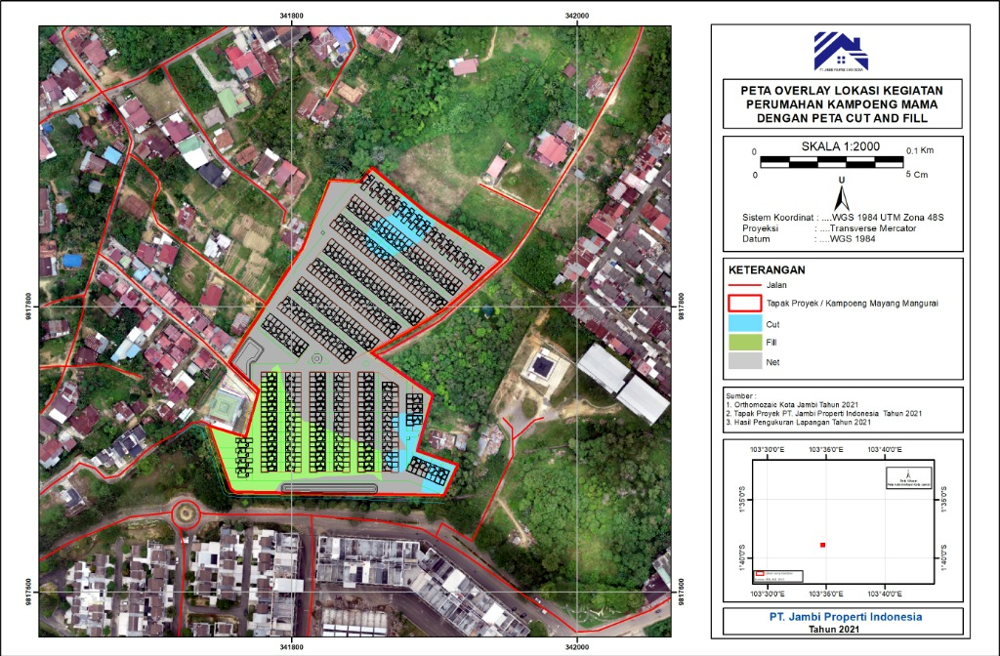
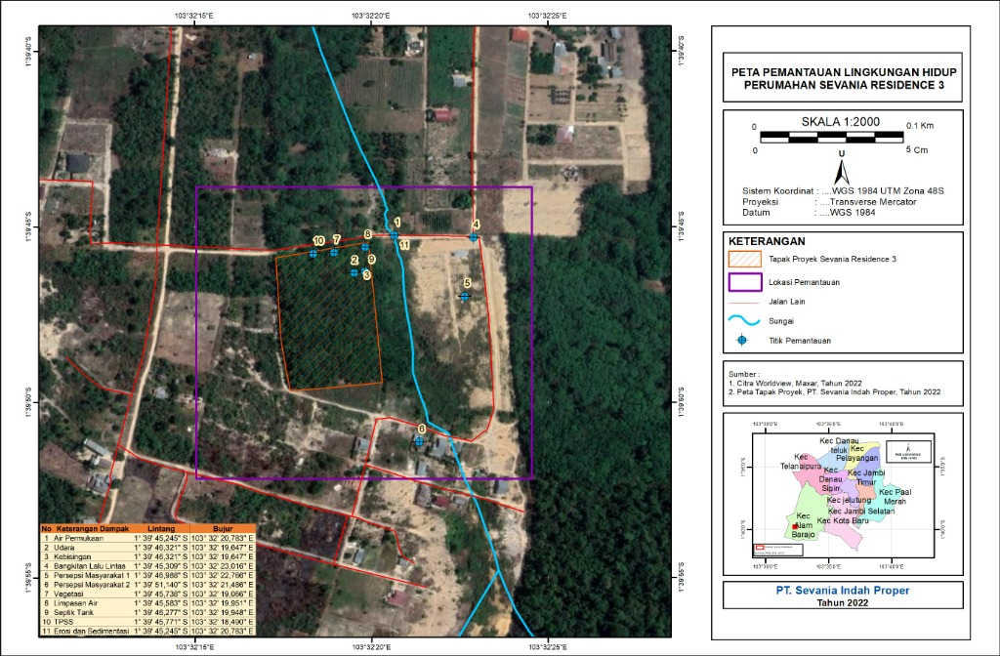
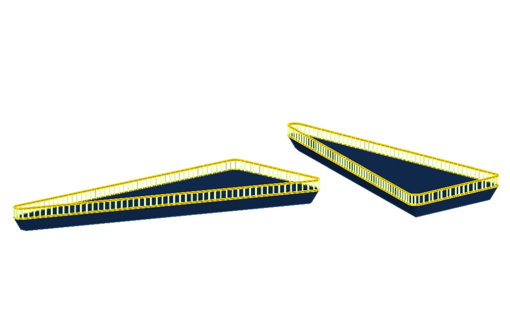
Gambaran Proyek
Penyusunan dokumen teknis dan lingkungan UKL-UPL untuk 15+ proyek pengembangan perumahan beserta infrastruktur pendukung, meliputi jaringan jalan internal, sistem drainase, kolam retensi, dan ruang terbuka hijau. Kajian kondisi eksisting dan topografi tapak didukung oleh pemetaan udara beresolusi tinggi menggunakan UAV untuk menyediakan data spasial yang lebih detail sebagai dasar analisis dan perencanaan.
Kontribusi & Alur Kerja
1. Akuisisi & Fotogrametri UAV
- Melakukan akuisisi foto udara menggunakan UAV Autel EVO II Pro pada area tapak perumahan untuk memperoleh data spasial beresolusi tinggi.
- Mengolah foto udara menggunakan Agisoft Metashape, meliputi photo alignment, pembentukan dense cloud, klasifikasi ground points, hingga menghasilkan Digital Terrain Model (DTM) dan orthomosaic.
- Melakukan Quality Control terhadap klasifikasi ground points untuk memperoleh representasi permukaan tanah yang sesuai sebagai dasar analisis topografi.
2. Analisis Spasial & Topografi
- Menganalisis lokasi proyek terhadap batas administrasi, tutupan lahan, RTRW, dan kesesuaian lahan menggunakan data spasial dan hasil pemetaan UAV.
- Memanfaatkan DTM hasil fotogrametri UAV untuk analisis topografi detail, termasuk penyusunan kontur, analisis elevasi dan kelerengan, serta perhitungan cut and fill.
- Mengintegrasikan hasil analisis dengan data GIS untuk mendukung penyusunan peta kondisi eksisting, pengelolaan, dan pemantauan lingkungan.
3. Analisis Hidrologi & Drainase
- Memanfaatkan data elevasi dan kelerengan dari DTM UAV untuk mendukung analisis debit limpasan kondisi sebelum dan setelah pembangunan menggunakan Metode Rasional.
- Melakukan analisis curah hujan rancangan dan pengolahan karakteristik topografi untuk mendukung perencanaan sistem drainase, kolam retensi, dan sumur resapan.
- Menganalisis arah aliran dan kondisi topografi sebagai dasar penyusunan sistem pengelolaan limpasan dan konservasi air pada kawasan proyek.
Project Overview
Preparation of statutory UKL-UPL (EMP) documentation for 15+ residential estate development projects and supporting infrastructure, including internal road networks, drainage systems, retention ponds, and green open spaces. Baseline site conditions and site topography were augmented with high-resolution UAV aerial mapping to provide fine-scale spatial datasets informing spatial planning, earthwork grading, and stormwater engineering.
Contributions & Workflow
1. UAV Acquisition & Photogrammetry
- Executed aerial drone photo surveys using Autel EVO II Pro over residential site parcels to capture high-resolution spatial datasets.
- Processed aerial imagery end-to-end in Agisoft Metashape (photo alignment, dense point cloud generation, ground point classification) to generate high-accuracy Digital Terrain Models (DTM) and orthomosaics.
- Performed rigorous quality control on ground point filtering to ensure true bare-earth terrain representation for engineering analysis.
2. Spatial & Topographic Analytics
- Evaluated site boundaries against administrative limits, land cover, municipal zoning (RTRW), and land suitability using GIS and UAV mapping outputs.
- Utilized UAV-derived DTMs for fine-scale topographic modeling, contour generation, slope gradient evaluation, and earthwork cut-and-fill calculations.
- Integrated spatial findings into statutory environmental baseline, management, and monitoring maps compliant with KLHK standards.
3. Hydrological & Drainage Engineering
- Applied high-resolution elevation and slope datasets from UAV DTMs to calculate pre- and post-development peak runoff discharge using the Rational Method.
- Conducted rainfall design frequency analysis and topography processing to size drainage networks, retention ponds, and infiltration wells.
- Modeled surface flow direction and local gradients to design integrated stormwater management and sustainable water conservation systems across project footprints.
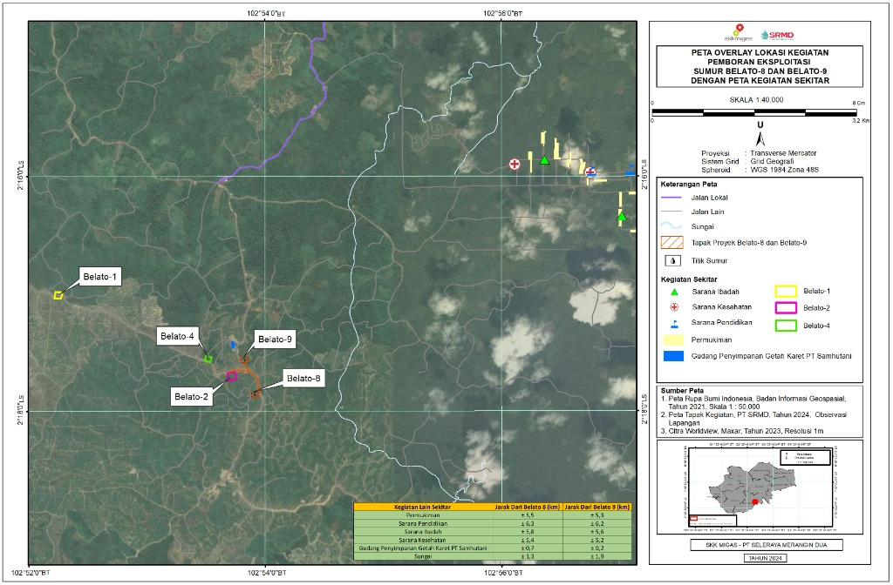
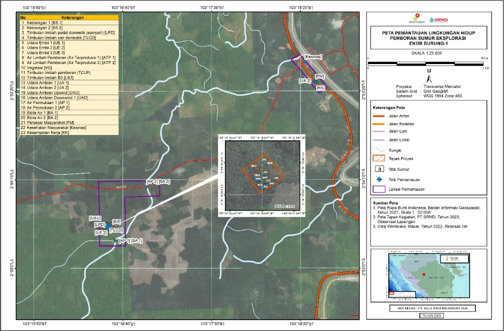
Gambaran Proyek: Penyusunan dokumen UKL-UPL untuk kegiatan pengeboran eksplorasi dan eksploitasi serta survei seismik di wilayah konsesi migas Jambi dan Sumatera Selatan.
Kontribusi: Analisis spasial lokasi proyek terhadap batas administrasi, tutupan lahan sekitar, tata ruang (RTRW), topografi, dan kesesuaian lahan untuk mengevaluasi konformitas spasial dan kelayakan lokasi. Dari hasil analisis tersebut, diproduksi peta pengelolaan dan pemantauan lingkungan yang memenuhi standar kartografi KLHK sebagai lampiran resmi dokumen UKL-UPL.
Peta Tematik yang Dihasilkan:
- Peta administrasi untuk menunjukkan batas kabupaten, kecamatan, desa, dan lokasi kegiatan.
- Peta tata ruang (RTRW) untuk mengevaluasi kesesuaian lokasi terhadap rencana tata ruang wilayah.
- Peta kawasan hutan dan PIPPIB untuk mengidentifikasi status kawasan serta potensi kendala perizinan.
- Peta tutupan lahan untuk menggambarkan kondisi penggunaan dan penutupan lahan eksisting.
- Peta geologi untuk mendukung analisis kondisi geologi dan karakteristik batuan.
- Peta hidrologi yang menampilkan jaringan sungai, badan air, dan sistem drainase.
- Peta topografi untuk menganalisis elevasi, kemiringan lereng, dan karakteristik medan.
- Peta kegiatan sekitar untuk mengidentifikasi aktivitas dan objek sensitif di sekitar lokasi proyek.
- Peta jalur mobilisasi untuk mendukung perencanaan transportasi peralatan, material, dan akses kegiatan.
- Peta pengelolaan lingkungan yang menunjukkan lokasi fasilitas mitigasi dan pengendalian dampak lingkungan.
- Peta pemantauan lingkungan yang menampilkan titik pemantauan kualitas udara, air, kebisingan, dan parameter lingkungan lainnya.
Project Overview: Environmental assessment documentation for exploratory and production well drilling and 2D/3D seismic survey programs across oil & gas working blocks.
Contributions: Spatial analysis of project locations against administrative boundaries, surrounding land cover, spatial planning (RTRW), topography, and land suitability to evaluate spatial conformity and site feasibility, producing environmental management and monitoring maps meeting KLHK cartographic standards as official UKL-UPL annexes.
Thematic Maps Produced:
- Administrative Boundary Map
- Regional Spatial Zoning (RTRW) Conformity Map
- State Forest Zone & Primary Forest Moratorium (PIPPIB) Map
- Existing Land Cover & Vegetation Map
- Geological & Lithological Map
- Hydrological & Surface Water Drainage Map
- Topographic & Elevation Gradient Map
- Surrounding Land Activity & Sensitive Receptors Map
- Heavy Equipment & Logistics Mobilization Route Map
- Environmental Mitigation & Impact Management Map
- Environmental Monitoring Stations Map (Air, Water, Noise)
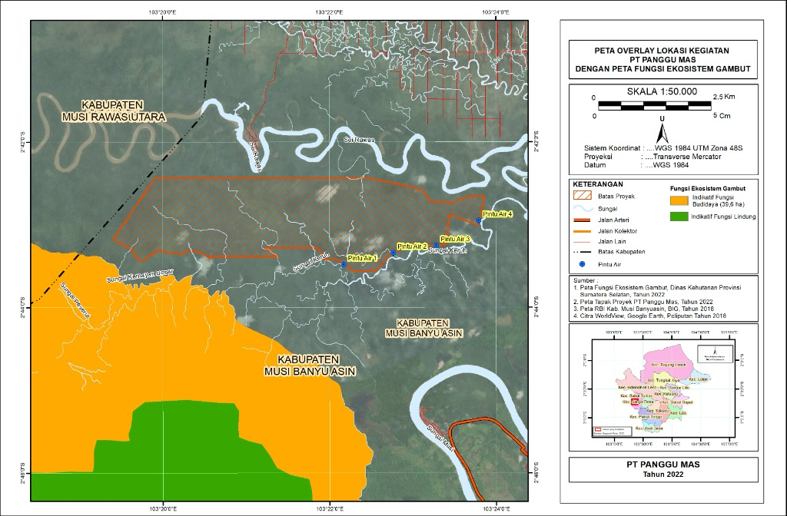
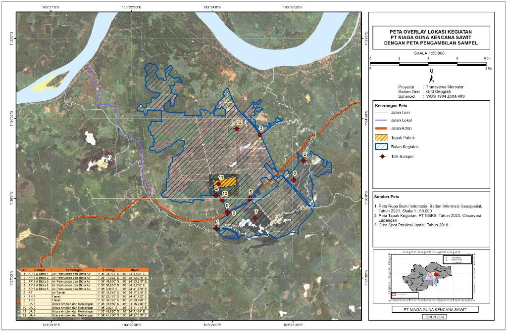
Gambaran Proyek: Penyusunan dokumen lingkungan untuk proyek perkebunan kelapa sawit, pabrik CPO, dan hutan tanaman industri (HTI) dari skala ratusan hingga ribuan hektar.
Kontribusi: Menyiapkan peta teknis dan dataset spasial yang memenuhi standar kartografi KLHK sebagai lampiran resmi dokumen. Memastikan akurasi posisi, konsistensi format, dan ketepatan delineasi batas konsesi serta blok tanam. Melakukan Analisis Overlay Spasial dengan mengintegrasikan layer: batas administrasi, RTRW, kawasan hutan, PIPPIB, KHG (gambut), kelerengan, topografi, hidrologi, dan data kegiatan sekitar untuk menilai kesesuaian lokasi dan menyusun rencana pengelolaan serta pemantauan lingkungan.
Project Overview: Environmental evaluation and planning documents for large-scale oil palm estates, palm oil mills (CPO), and industrial forest concessions (HTI) covering thousands of hectares.
Contribution: Built comprehensive spatial datasets integrating concession boundaries, planting blocks, conservation riparian zones, Peat Hydrological Units (KHG), slope classifications, and State Forest boundaries to ensure regulatory compliance and sustainable plantation management.
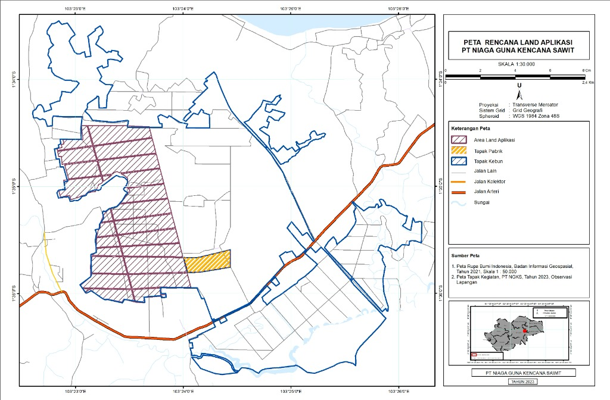
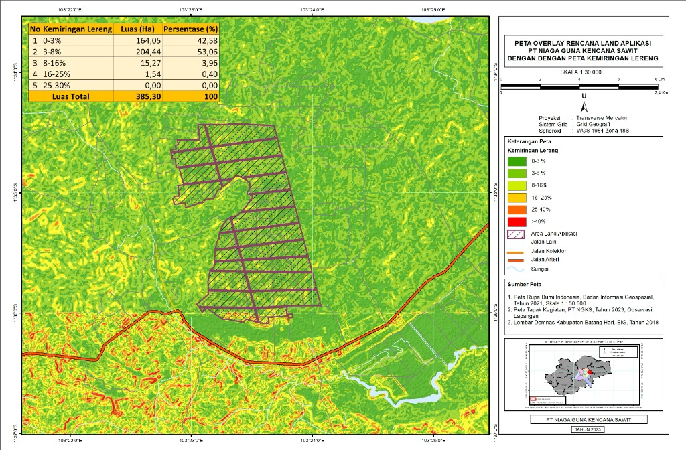
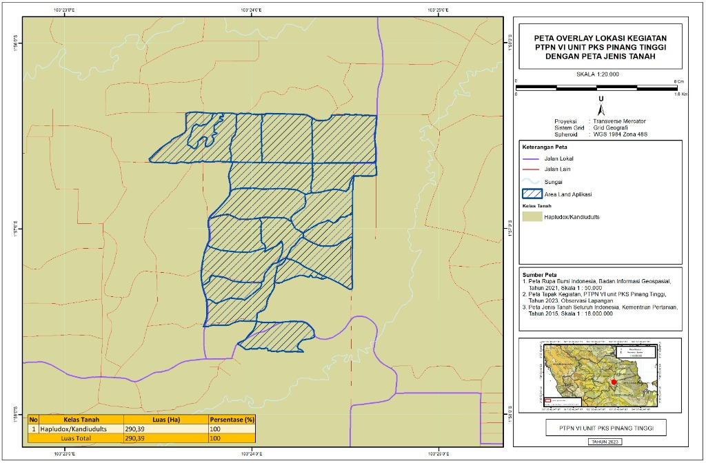
Gambaran Proyek: Studi kelayakan land application limbah cair pabrik kelapa sawit (POME) melalui integrasi data topografi, sifat fisik-kimia tanah, dan hasil survei geolistrik ke dalam kerangka analisis spasial berbasis GIS. Tujuannya adalah menilai kesesuaian lahan dan merancang sistem aplikasi yang aman secara lingkungan.
Kontribusi: Melakukan analisis overlay spasial untuk mengevaluasi kesesuaian lahan, mengidentifikasi risiko lingkungan, dan mendukung desain sistem land application yang berkelanjutan.
Peta yang Dihasilkan:
- Peta klasifikasi lereng untuk mendukung evaluasi kesesuaian lahan dan pengendalian risiko erosi pada area aplikasi limbah.
- Peta jenis tanah untuk menganalisis karakteristik fisik tanah yang memengaruhi kapasitas infiltrasi dan penyimpanan limbah.
- Peta hidrogeologi untuk mengidentifikasi kondisi akuifer dan kerentanan air tanah terhadap potensi pencemaran.
- Peta arah aliran air tanah untuk memprediksi pergerakan kontaminan pada sistem bawah permukaan.
- Peta distribusi dan arah aliran limbah untuk mengevaluasi pola sebaran limbah pada lingkungan permukaan dan bawah permukaan.
- Peta lokasi pemantauan lingkungan untuk mendukung perancangan program pemantauan tanah, air tanah, dan air permukaan yang efektif dan sesuai kebutuhan kajian.
Project Overview: Technical feasibility and environmental safety assessment for Palm Oil Mill Effluent (POME) land application by fusing topographic terrain models, soil physicochemical parameters, and resistivity geoelectrical surveys into a GIS analytical framework.
Deliverables: Spatial suitability modeling and production of mandatory technical approval maps:
- Slope gradient classification map for runoff control
- Soil taxonomy and permeability suitability map
- Hydrogeological aquifer vulnerability map
- Groundwater flow direction and contaminant transport trajectory map
- POME distribution channel layout and application zone map
- Groundwater monitoring well network design map
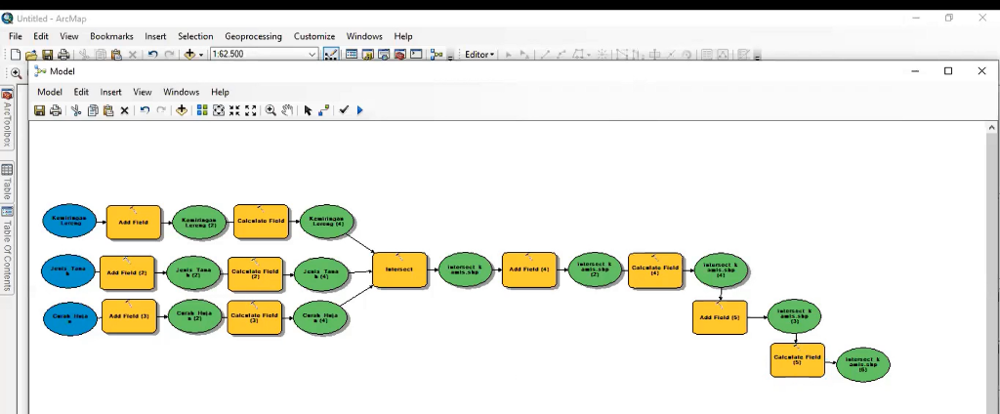
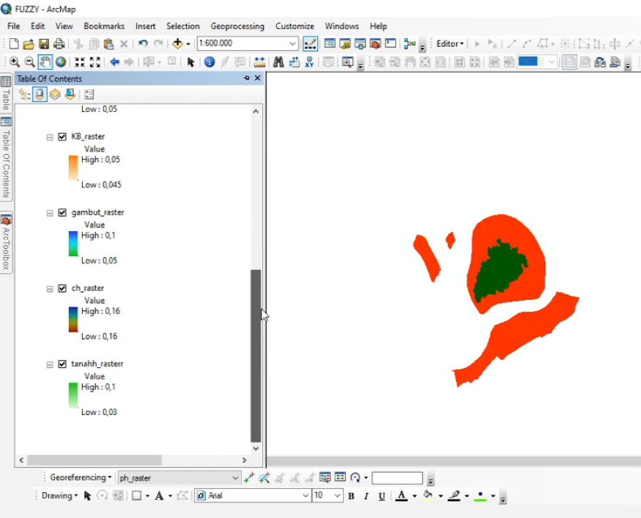
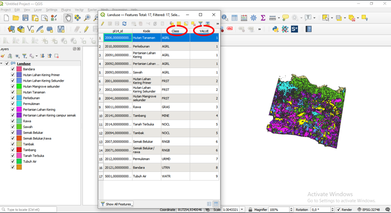
Ringkasan Peran: Mendampingi dosen dalam penyampaian materi dan membimbing mahasiswa secara langsung dalam praktikum GIS - dari persiapan data hingga interpretasi hasil analisis.
Topik yang Diampu:
- Analisis Fungsi Kawasan (ArcGIS): Persiapan data spasial multivariabel (kemiringan lereng dari DEM, curah hujan, jenis tanah) → otomasi workflow dengan ModelBuilder → klasifikasi fungsi kawasan menggunakan VBScript dan logika Boolean → produksi peta fungsi kawasan rawan bencana.
- Evaluasi Kesesuaian Lahan (Logika Fuzzy): Penerapan fungsi keanggotaan fuzzy pada parameter lahan → proses fuzzifikasi, inferensi, dan defuzzifikasi → generasi peta kesesuaian lahan dengan metode Weighted Sum overlay di ArcGIS.
- Pemodelan Hidrologi (QSWAT+): Persiapan data DEM, tutupan lahan, tanah, dan iklim → delineasi watershed → definisi HRU (Hydrologic Response Unit) → eksekusi simulasi → interpretasi output (debit aliran, limpasan, sedimen, kualitas air) → kalibrasi model dan perencanaan watershed berbasis skenario.
Role Overview: Assisted lead faculty in course delivery and supervised undergraduate students in hands-on GIS laboratories from raw data processing to analytical modeling.
Core Modules Instructed:
- Forest & Land Function Analysis (ArcGIS): Multi-criteria terrain, soil, and rainfall modeling automated via ModelBuilder and Boolean/VBScript logic to map spatial conservation zones.
- Fuzzy Land Suitability Evaluation: Applying fuzzy membership functions, fuzzification, rule evaluation, and defuzzification via ArcGIS Weighted Overlay.
- Hydrological Modeling (QSWAT+): Digital elevation preprocessing, watershed delineation, Hydrologic Response Unit (HRU) definition, continuous flow simulation, sediment transport modeling, and scenario-based catchment planning.
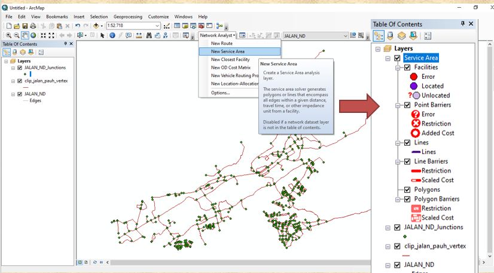
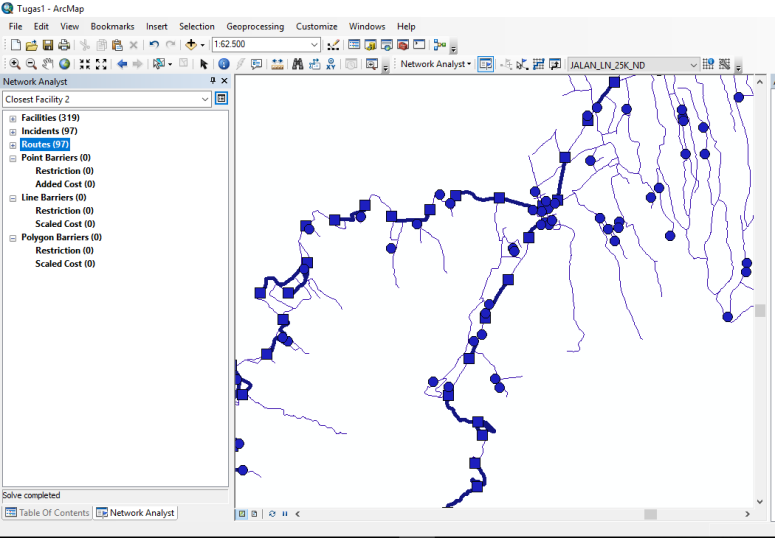
Ringkasan Peran: Membimbing mahasiswa dalam memahami konsep dan aplikasi praktis ArcGIS Network Analyst untuk mengevaluasi aksesibilitas spasial antara kawasan permukiman dan fasilitas terdekat.
Topik yang Diampu: Analisis Fasilitas Terdekat (Closest Facility Analysis). Pengumpulan dan pengolahan dataset spasial (batas administrasi, fasilitas, jaringan jalan, permukiman) dari Ina-Geoportal dan OpenStreetMap → konversi sistem koordinat dan clipping wilayah studi → manajemen data jaringan jalan → definisi batas unit lingkungan dan generasi titik sentroid dari poligon permukiman → eksekusi Closest Facility Analysis untuk memetakan rute optimal dan hubungan spasial permukiman-fasilitas.
Role Overview: Instructed urban planning students in practical applications of ArcGIS Network Analyst to measure spatial accessibility between residential communities and public facilities.
Core Module: Closest Facility & Network Accessibility Analysis utilizing OpenStreetMap and national spatial data (Ina-Geoportal), establishing topological road networks, building centroid origins, and calculating optimal routing accessibility metrics.
PENGALAMAN MAGANG
INTERNSHIP EXPERIENCE
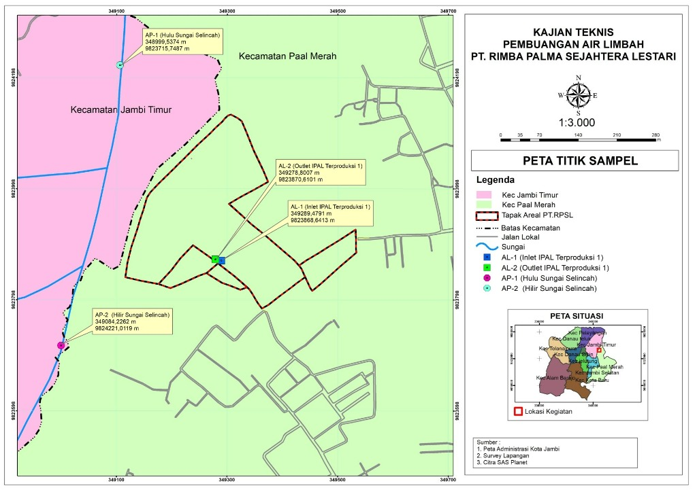
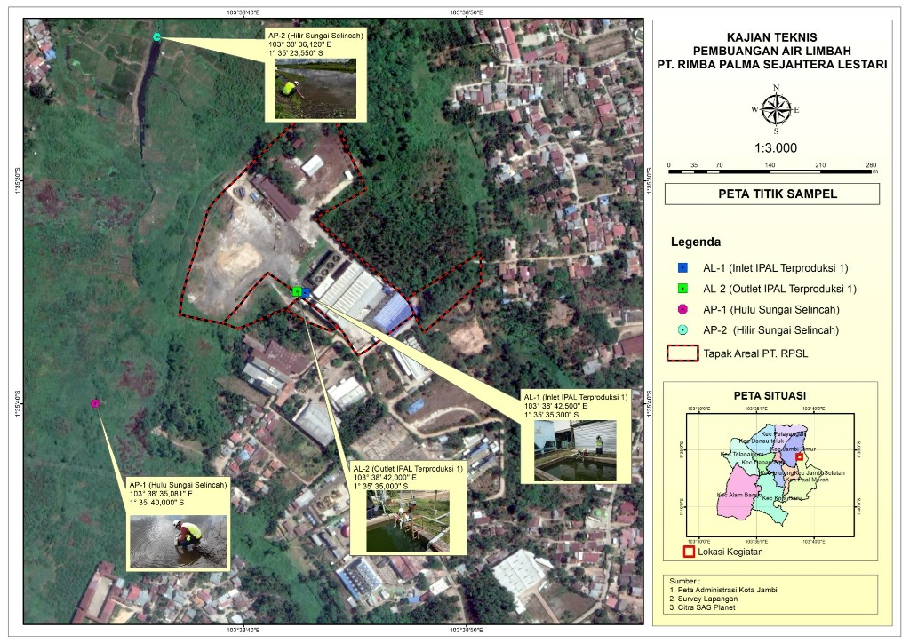
Gambaran Proyek: Penilaian tingkat pencemaran air Sungai Selincah yang menerima beban limbah domestik dan industri secara bersamaan. Pengambilan sampel dilakukan di dua titik observasi (hulu dan hilir titik pembuangan limbah) menggunakan metode Indeks Pencemaran (IP) sesuai Keputusan Menteri Lingkungan Hidup No. 115 Tahun 2003, dengan baku mutu acuan Air Kelas II berdasarkan PP No. 82 Tahun 2001.
Kontribusi Teknis:
- Pengumpulan Data Lapangan: Melaksanakan pengambilan sampel pada dua titik observasi, pengukuran parameter fisik, kimia, dan biologi kualitas air, serta pencatatan koordinat lokasi menggunakan GPS.
- Analisis Laboratorium: Melakukan pengujian parameter kualitas air berdasarkan Standar Nasional Indonesia (SNI) dan regulasi KLHK, serta membandingkan hasil pengujian dengan baku mutu Air Kelas II.
- Analisis Kualitas Air: Menghitung Indeks Kualitas Air (IKA) dan Indeks Pencemaran (IP) untuk mengevaluasi status mutu air dan mengklasifikasikannya menjadi memenuhi baku mutu, tercemar ringan, tercemar sedang, atau tercemar berat.
Project Overview: River pollution index evaluation along Selincah River under mixed industrial and domestic effluent discharge. In-situ and laboratory water quality assessments evaluated against Class II National Water Quality Standards (PP No. 82/2001 & Kepmen LH No. 115/2003).
Technical Contributions:
- Field Data Collection: Executed in-situ water sampling across two strategic observation stations, recorded physical, chemical, and biological water quality parameters, and performed GPS geo-tagging of sample locations.
- Laboratory Analysis: Conducted water quality parameter testing in compliance with Indonesian National Standards (SNI) and KLHK regulations, benchmarking laboratory concentrations against Class II River Water Quality Standards.
- Water Quality Analysis: Computed Water Quality Index (WQI / IKA) and Pollution Index (IP) to evaluate water quality status and classify stream conditions into meeting standards, lightly polluted, moderately polluted, or heavily polluted.
SURVEI LAPANGAN
FIELD SURVEY
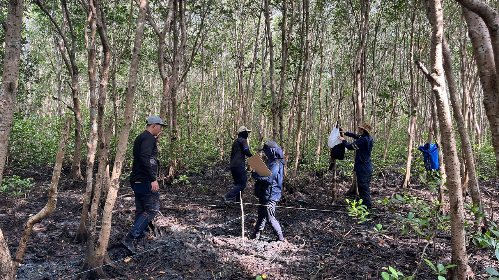
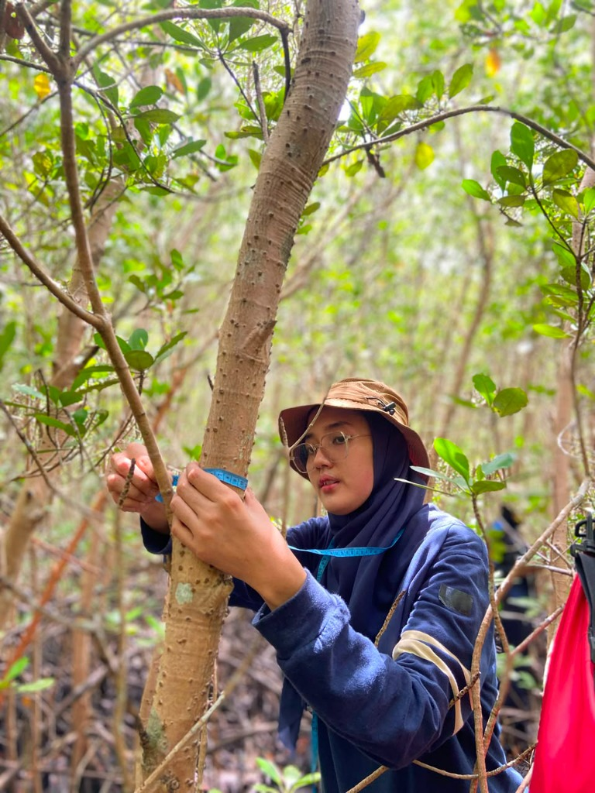
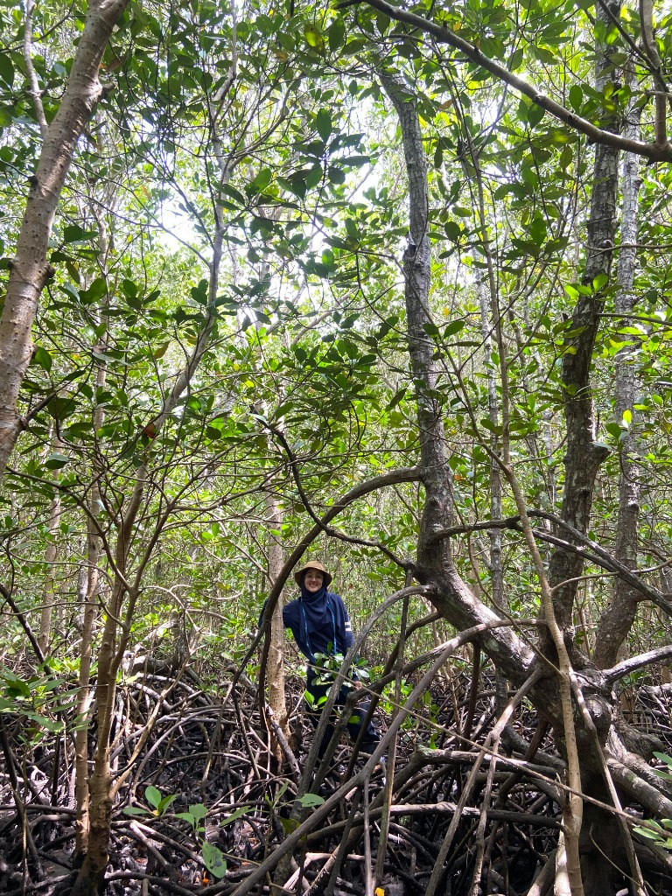
Tentang Proyek
Kegiatan ini merupakan bagian dari penelitian lapangan untuk mengestimasi dan memetakan Aboveground Biomass (AGB) pada ekosistem mangrove menggunakan data penginderaan jauh. Mangrove merupakan salah satu ekosistem pesisir yang memiliki peran penting dalam mitigasi perubahan iklim melalui kemampuannya menyerap dan menyimpan karbon dalam biomassa vegetasi serta ekosistemnya.
Dalam konteks tersebut, informasi mengenai biomassa menjadi komponen penting untuk mengkuantifikasi potensi penyimpanan karbon, memahami kondisi ekosistem, dan mendukung pemantauan perubahan ekosistem mangrove berbasis data spasial. Integrasi antara pengukuran lapangan dan data penginderaan jauh memungkinkan estimasi biomassa dilakukan secara lebih luas dan dapat direplikasi pada area yang lebih besar.
Tujuan
- Mengestimasi dan memetakan Aboveground Biomass (AGB) menggunakan citra Sentinel-2.
- Menganalisis hubungan AGB dengan parameter biofisik mangrove, termasuk kerapatan kanopi, Leaf Area Index (LAI), dan tinggi kanopi menggunakan data Sentinel-1 dan Sentinel-2.
- Mengidentifikasi parameter biofisik yang paling berhubungan dengan AGB sebagai informasi pendukung pengelolaan dan konservasi mangrove.
Kontribusi Lapangan Saya
Saya terlibat langsung dalam survei biomassa mangrove berbasis non-destructive sampling untuk memperoleh data biofisik yang digunakan sebagai informasi referensi dalam analisis penginderaan jauh. Kegiatan lapangan meliputi:
- Pengukuran biomassa: Melakukan pengukuran parameter pohon, terutama diameter batang (DBH) dan tinggi kanopi, sebagai bagian dari estimasi biomassa atas permukaan.
- Spatial data collection: Menentukan koordinat setiap plot pengukuran menggunakan GNSS handheld receiver untuk menghubungkan data lapangan dengan informasi citra satelit.
- Vegetation assessment: Mengidentifikasi spesies mangrove dan mencatat karakteristik vegetasi pada plot pengamatan.
- Field validation: Mengumpulkan data biofisik lapangan yang dapat digunakan untuk mendukung analisis dan validasi estimasi biomassa berbasis citra satelit.
Kegiatan ini memberikan saya pengalaman memahami bagaimana data lapangan dikumpulkan, divalidasi, dan digunakan sebagai dasar untuk mengembangkan estimasi biomassa berbasis penginderaan jauh. Pengalaman tersebut memperkuat pemahaman saya mengenai pentingnya integrasi antara field measurements dan spatial data dalam menghasilkan informasi lingkungan yang dapat diinterpretasikan secara lebih akurat.
Pengalaman ini menjadi salah satu fondasi bagi pemahaman saya dalam menerapkan pendekatan spatial monitoring of biomass and carbon-related environmental indicators, khususnya untuk mendukung pemantauan kondisi ekosistem, estimasi karbon, dan pengambilan keputusan berbasis data spasial.
Project Overview
This initiative was part of a field research campaign to estimate and map Aboveground Biomass (AGB) in mangrove ecosystems using remote sensing data. Mangroves represent critical coastal ecosystems in climate change mitigation due to their immense capacity to sequester and store carbon within their vegetative biomass and sediment substrate.
In this context, biomass data serves as a vital component for quantifying carbon sequestration potential, evaluating ecosystem health, and enabling spatial monitoring of mangrove dynamics. Integrating in-situ field surveys with satellite imagery allows biomass estimation to be scaled effectively and replicated across wider coastal landscapes.
Objectives
- Estimate and map mangrove Aboveground Biomass (AGB) using Sentinel-2 multispectral imagery.
- Evaluate empirical relationships between AGB and biophysical properties (canopy cover, Leaf Area Index / LAI, canopy height) using fused Sentinel-1 SAR and Sentinel-2 data.
- Identify key biophysical predictors to support mangrove conservation and climate mitigation strategies.
Field Campaign Contributions
- Non-destructive Sampling: Direct measurement of Diameter at Breast Height (DBH), canopy height, and tree allometry across sample plots.
- High-Precision GNSS Positioning: Geo-tagging all sample plot centers with handheld GNSS receivers for satellite pixel matching.
- Botanical Assessment: Mangrove species identification and stand density recording.
- Satellite Model Validation: Ground-truth calibration linking in-situ biomass with satellite vegetation indices.
This hands-on campaign provided deep practical insights into how empirical field data is gathered, validated, and utilized as ground truth to train and calibrate satellite-based biomass estimation models. It underscored the critical synergy between rigorous field measurements and spatial data in generating scientifically accurate, interpretable environmental insights.
This experience forms a solid cornerstone for applying spatial monitoring of biomass and carbon-related environmental indicators to support blue carbon accounting, coastal ecosystem management, and evidence-based environmental policy.
PENELITIAN
RESEARCH
Tentang Studi
Penelitian ini menganalisis hubungan antara El Niño–Southern Oscillation (ENSO) dan variabilitas curah hujan di Sulawesi Tengah menggunakan data jangka panjang selama 1991–2024. ENSO merupakan salah satu faktor iklim global yang dapat memengaruhi pola curah hujan di Indonesia. Perubahan tersebut dapat berimplikasi pada risiko kekeringan, banjir, dan bencana hidrometeorologi, sehingga pemahaman mengenai hubungan ENSO dan curah hujan penting dalam mendukung perencanaan adaptasi terhadap variabilitas dan perubahan iklim.
Pertanyaan yang Dikaji
Seberapa besar ENSO memengaruhi variabilitas curah hujan di Sulawesi Tengah, dan apakah pengaruh tersebut sama di setiap wilayah? Untuk menjawabnya, analisis dilakukan pada empat stasiun meteorologi: Luwuk · Poso · Toli-Toli · Palu.
Data & Pendekatan Analisis
- Curah Hujan: Data observasi stasiun meteorologi BMKG.
- ENSO: Oceanic Niño Index (ONI) dari Climate Prediction Center (CPC).
Data ONI dan curah hujan dianalisis pada skala tiga bulanan untuk mengevaluasi hubungan keduanya menggunakan: Pearson Correlation, Coefficient of Determination (R²), dan Statistical Significance Test (t-test). Analisis kemudian diperluas berdasarkan intensitas El Niño dan La Niña, sehingga tidak hanya melihat apakah ENSO berpengaruh, tetapi juga bagaimana respons curah hujan berubah berdasarkan kekuatan kejadian.
Temuan Utama
Hasil penelitian menunjukkan bahwa pengaruh ENSO terhadap curah hujan berbeda secara spasial di Sulawesi Tengah. Secara umum, El Niño cenderung menurunkan curah hujan, sedangkan La Niña cenderung meningkatkan curah hujan. Namun, kekuatan pengaruhnya berbeda antarwilayah.
Hubungan paling kuat ditemukan di Toli-Toli dan Palu, sedangkan di Luwuk dan Poso pengaruh ENSO relatif lebih lemah. Analisis berdasarkan kelas intensitas menunjukkan bahwa dampak ENSO berubah tergantung kekuatan kejadian. Salah satu temuan paling jelas terlihat di Palu saat El Niño Kuat, dengan korelasi -0,45 dan R² sekitar 0,20. Artinya, tidak semua wilayah dapat diperlakukan dengan pendekatan iklim yang sama.
Apa yang Saya Kerjakan
- Mengolah data curah hujan jangka panjang dan menggunakan indikator ONI.
- Menghitung anomali curah hujan, korelasi Pearson, dan koefisien determinasi.
- Melakukan uji signifikansi statistik (t-test) dan mengklasifikasikan intensitas ENSO.
- Membandingkan respons curah hujan antarwilayah secara spasial.
Study Overview
This study investigated the teleconnections between El Niño–Southern Oscillation (ENSO) phases and long-term rainfall anomalies across Central Sulawesi using a 34-year climate observation record (1991–2024), providing crucial baseline insights for regional climate adaptation and disaster risk reduction.
Key Questions
To what extent does ENSO drive rainfall variability across microclimates in Central Sulawesi? Analyzed across four BMKG meteorological stations: Luwuk, Poso, Toli-Toli, and Palu.
Data & Methodology
- Rainfall Data: Long-term daily and monthly observational records from BMKG stations.
- ENSO Indicator: 3-month running mean Oceanic Niño Index (ONI) from NOAA Climate Prediction Center (CPC).
- Statistical Analysis: Pearson correlation, coefficient of determination (R²), Student\'s t-test significance testing, and anomaly categorization across El Niño/La Niña intensity classes.
Core Findings
Strongest sensitivity was identified at Toli-Toli (r = -0.49) and Palu (r = -0.43), whereas Luwuk and Poso exhibited weaker teleconnections due to local topography and sea-surface temperature interactions. During Strong El Niño events, Palu experienced severe rainfall suppression (r = -0.45, R² ≈ 0.20).
Tentang Proyek
Penelitian ini mengembangkan pendekatan untuk menilai potensi banjir berdasarkan hubungan antara karakteristik fisik DAS, curah hujan, dan kapasitas sungai. Analisis dilakukan pada Way Urang Sub-Watershed seluas sekitar 20,2 km² dengan mengintegrasikan: Remote sensing → GIS → data curah hujan → survei lapangan → hydrological analysis.
Tujuannya bukan hanya menghitung debit puncak, tetapi memahami mengapa suatu wilayah menghasilkan limpasan tinggi dan bagian mana yang memiliki kerentanan lebih besar terhadap banjir.
Pertanyaan yang Dikaji
Bagaimana karakteristik fisik DAS dan intensitas hujan memengaruhi limpasan, dan apakah kapasitas sungai mampu menampung debit puncak yang dihasilkan? Untuk menjawab pertanyaan tersebut, penelitian menghubungkan beberapa komponen utama:
Data yang Digunakan
- Remote Sensing: Sentinel-2 Level-2A. Digunakan untuk memperoleh NDVI dan mengestimasi kelas kerapatan vegetasi.
- Topografi: DEMNAS. Digunakan untuk memperoleh: slope; jaringan sungai; panjang saluran; dan drainage density.
- Data Hidrometeorologi: Data curah hujan harian periode 2014–2023 digunakan untuk menghitung intensitas hujan yang menjadi salah satu komponen estimasi debit puncak.
- Data Lapangan: Survei dilakukan untuk memperoleh: kerapatan kanopi; laju infiltrasi tanah; penampang sungai; kedalaman sungai; dan kondisi lapangan terkait kejadian banjir.
Pendekatan Analisis
- 01 — Memetakan Karakteristik Fisik DAS: Karakteristik yang memengaruhi pembentukan limpasan dipetakan menggunakan GIS dan remote sensing. Parameter utama meliputi: Slope · Vegetation Density · Soil Infiltration · Drainage Density. Keempat parameter tersebut kemudian dioverlay untuk membentuk spatial mapping units.
- 02 — Menghubungkan Citra Satelit dengan Data Lapangan: NDVI dari Sentinel-2 tidak langsung digunakan sebagai representasi kerapatan vegetasi. Data tersebut terlebih dahulu dikalibrasi menggunakan hasil pengukuran lapangan pada 25 lokasi sampling. Hubungan antara NDVI dan kerapatan kanopi menghasilkan: R² = 0,8196. Pendekatan ini memungkinkan informasi dari citra satelit dikaitkan dengan kondisi vegetasi aktual di lapangan.
- 03 — Membentuk Peta Runoff Coefficient: Parameter slope, vegetation density, infiltration capacity, dan drainage density dikombinasikan menggunakan pendekatan Cook Method. Hasilnya berupa peta spasial runoff coefficient, yaitu estimasi proporsi curah hujan yang berpotensi berubah menjadi limpasan permukaan. Nilai rata-rata runoff coefficient sub-DAS mencapai: 69,20%.
- 04 — Mengestimasi Debit Puncak: Runoff coefficient kemudian dikombinasikan dengan intensitas hujan; luas DAS; dan karakteristik waktu konsentrasi. Dengan Rational Method, diperoleh estimasi: Peak Discharge = 217,19 m³/s.
- 05 — Membandingkan dengan Kapasitas Sungai: Estimasi debit puncak kemudian dibandingkan dengan kapasitas saluran berdasarkan survei morfometri sungai. Hasil pengukuran menunjukkan: Luas penampang sungai: 27,91 m². Estimasi bankfull discharge: ±9,53 m³/s.
Temuan Utama
Analisis menunjukkan bahwa potensi limpasan tinggi terutama berkaitan dengan kombinasi: Kemiringan lereng tinggi + kapasitas infiltrasi tanah rendah + curah hujan tinggi. Kondisi tersebut meningkatkan jumlah air yang bergerak sebagai surface runoff dan berkontribusi terhadap peningkatan debit puncak.
Ketidakseimbangan antara Peak discharge ≈ 217,19 m³/s dan Bankfull capacity ≈ 9,53 m³/s menunjukkan potensi overbank flow yang tinggi, terutama pada wilayah hilir seperti Desa Bunut. Temuan spasial tersebut juga konsisten dengan informasi lapangan bahwa banjir terjadi secara berulang di wilayah hilir.
Apa yang Saya Kerjakan
Dalam penelitian ini saya terlibat dalam proses yang menghubungkan spatial analysis, environmental modelling, dan field validation, termasuk: pengolahan Sentinel-2 dan ekstraksi NDVI; pengolahan DEMNAS untuk topografi dan jaringan drainase; integrasi data curah hujan; pengolahan data survei vegetasi; analisis infiltrasi tanah; spatial overlay untuk pemodelan runoff coefficient; estimasi debit puncak menggunakan Rational Method; analisis kapasitas saluran menggunakan data morfometri lapangan; dan interpretasi hubungan antara karakteristik DAS, limpasan, dan potensi banjir.
Research Scope
Developed an end-to-end framework integrating remote sensing, GIS modeling, in-situ hydrological surveys, and hydraulic capacity assessments across the 20.2 km² Way Urang Sub-Watershed to identify physical drivers of flash flooding.
Integrated Analytical Workflow
Key Methodology & In-situ Validation
- Field Calibration: Sentinel-2 NDVI calibrated against in-situ hemispherical canopy measurements across 25 field plots, yielding a strong coefficient of determination: R² = 0.8196.
- Cook Method Runoff Modeling: Synthesizing slope, calibrated vegetation, infiltration rates, and drainage density produced a spatial runoff map with a catchment average coefficient of 69.20%.
- Peak Flow vs. Hydraulic Conveyance: Rational method calculations estimated peak discharge at Qp = 217.19 m³/s, severely exceeding measured bankfull river conveyance of ±9.53 m³/s (cross-sectional area 27.91 m²), explaining recurrent downstream overbank inundations.
Gambaran Penelitian
Mengembangkan dan mengevaluasi pendekatan estimasi debit sungai berbasis piksel menggunakan citra Sentinel-2 multitemporal, dengan mempertimbangkan karakteristik morfologi sungai yang diperoleh dari data fotogrametri UAV beresolusi tinggi.
Penelitian mengintegrasikan penginderaan jauh satelit, fotogrametri UAV, analisis GIS, dan machine learning untuk mengevaluasi kinerja metode CMHC pada sungai dengan karakteristik morfologi yang berbeda.
Alur Kerja & Metodologi
- Pengolahan Citra Satelit — Google Earth Engine: Mengolah citra Sentinel-2 multitemporal, meliputi cloud masking, ekstraksi Region of Interest (ROI), dan pembentukan fitur spektral untuk menghubungkan karakteristik spektral citra dengan variasi debit sungai.
- Fotogrametri UAV — Agisoft Metashape: Mengolah data foto udara dari DJI Mavic 3 Multispectral, mulai dari photo alignment dan pembentukan dense cloud hingga klasifikasi ground points untuk menghasilkan Digital Terrain Model (DTM) dan orthomosaic beresolusi tinggi.
- Analisis Morfologi — ArcGIS: Mengekstraksi tiga parameter morfologi saluran, yaitu lebar saluran, gradien saluran, dan sinuositas, berdasarkan DTM dan orthomosaic hasil pemrosesan UAV.
- Pemodelan & Analisis — Python/Google Colab: Menerapkan Random Forest untuk klasifikasi kelas debit serta menggunakan Python untuk prapemrosesan data, penentuan ambang kelas, analisis statistik, dan validasi model.
Fokus Analisis
Penelitian mengevaluasi seberapa baik metode CMHC berbasis Sentinel-2 dapat mengestimasi debit pada sungai dengan karakteristik morfologi yang berbeda, serta menguji apakah pemisahan data berdasarkan musim dapat meningkatkan kinerja model.
Evaluasi dilakukan pada tiga sungai dengan karakteristik saluran yang berbeda, yaitu Progo, Oyo, dan Serang, menggunakan parameter lebar saluran, gradien, dan sinuositas yang diperoleh dari data UAV.
Hasil analisis menunjukkan bahwa variasi ketiga parameter morfologi tersebut tidak memberikan pengaruh yang sama. Lebar saluran menjadi faktor yang paling konsisten terkait dengan kualitas estimasi, khususnya karena berkaitan dengan proporsi piksel air dan potensi mixed pixel pada citra Sentinel-2 beresolusi 10 m.
Hasil Utama
Sungai Progo — Kinerja Paling Stabil: Dengan lebar saluran sekitar 85 m, Progo menunjukkan kinerja model terbaik pada skenario tanpa pemisahan musim (NSE = 0,64 | RMSE = 20,08 m³/s | rRMSE = 41,74%). Model mampu merepresentasikan variasi temporal debit dengan lebih baik dibandingkan dua lokasi lainnya. Pemisahan data berdasarkan musim justru menghasilkan kinerja yang lebih rendah pada penelitian ini.
Sungai Oyo & Serang — Pengaruh Keterbatasan Resolusi Spasial: Kinerja model lebih rendah pada Sungai Oyo (lebar sekitar 35 m, NSE = −0,04) dan Sungai Serang (lebar sekitar 30 m, NSE = −0,37). Pada saluran yang lebih sempit, proporsi piksel Sentinel-2 yang mencakup campuran air dan tutupan lahan di sekitar sungai menjadi lebih besar, sehingga karakteristik spektral piksel air menjadi kurang representatif untuk estimasi debit.
Temuan Utama
Nilai Geospasial Proyek
Penelitian ini menunjukkan kemampuan dalam mengintegrasikan data satelit dan UAV, mengolah data fotogrametri menjadi produk DTM dan orthomosaic, melakukan analisis morfologi berbasis GIS, serta mengembangkan dan mengevaluasi model berbasis machine learning menggunakan Google Earth Engine dan Python.
Research Overview
Developed and evaluated a pixel-based river discharge estimation framework utilizing multitemporal Sentinel-2 optical imagery, accounting for river morphology characteristics derived from high-resolution UAV photogrammetry.
The research integrates satellite remote sensing, UAV photogrammetry, GIS analytics, and machine learning to benchmark CMHC method performance across rivers with contrasting channel morphology.
Workflow & Methodology
- Satellite Image Processing — Google Earth Engine: Processed multitemporal Sentinel-2 imagery including cloud masking, Region of Interest (ROI) extraction, and spectral feature engineering to link optical spectral dynamics with discharge dynamics.
- UAV Photogrammetry — Agisoft Metashape: Processed DJI Mavic 3 Multispectral aerial drone imagery end-to-end (photo alignment, dense cloud, ground point classification) to generate high-resolution bare-earth DTMs and orthomosaics.
- Morphological Analysis — ArcGIS: Extracted three micro-channel morphology metrics—channel width, bed slope gradient, and sinuosity—from UAV-derived DTM and orthomosaics.
- Modeling & Analytics — Python/Google Colab: Implemented Random Forest algorithms for discharge classification alongside Python for preprocessing, threshold optimization, statistical evaluation, and model validation.
Analysis Focus
The study evaluated how effectively Sentinel-2-based CMHC estimates discharge across rivers with varying morphology, and whether seasonal data stratification enhances model performance.
Evaluations across Progo, Oyo, and Serang Rivers revealed that channel width is the most consistent controlling factor governing estimation accuracy, directly tied to pure water pixel proportions vs. mixed pixel contamination at 10 m resolution.
Core Findings
Progo River — Most Robust Performance: With channel width of ~85 m, Progo achieved optimal performance without seasonal stratification (NSE = 0.64 | RMSE = 20.08 m³/s | rRMSE = 41.74%), tracking temporal hydrograph dynamics effectively. Seasonal partitioning lowered model accuracy.
Oyo & Serang Rivers — Spatial Resolution Limits: Performance declined on Oyo (width ~35 m, NSE = -0.04) and Serang (width ~30 m, NSE = -0.37) due to higher mixed pixel proportions from riparian edges at 10 m resolution.
Key Findings
Geospatial Project Value
This project demonstrates end-to-end capabilities in integrating satellite and UAV data, photogrammetric DTM/orthomosaic processing, GIS-based morphological analysis, and developing/evaluating machine learning workflows using Google Earth Engine and Python.
Gambaran Penelitian: Penelitian ini menganalisis hubungan antara perubahan tutupan lahan dan debit limpasan permukaan di Sub-DAS Batanghari Hilir. Perubahan tutupan lahan (khususnya ekspansi perkebunan dan permukiman) meningkatkan koefisien limpasan (C), sehingga proporsi curah hujan yang mengalir sebagai limpasan permukaan turut meningkat. Prediksi ini penting sebagai dasar perencanaan pengelolaan DAS yang berkelanjutan.
Tujuan Penelitian
Mengidentifikasi perubahan tutupan lahan pada tahun 2013, 2016, dan 2019; menghitung debit limpasan permukaan pada masing-masing periode; memprediksi tutupan lahan dan debit limpasan permukaan pada tahun 2030.
Metodologi
- Analisis Tutupan Lahan: Citra Landsat multi-temporal → koreksi radiometrik & atmosferik → klasifikasi terbimbing → uji akurasi.
- Perhitungan Limpasan: Metode Rasional.
- Prediksi Tutupan Lahan: Cellular Automata (CA).
- Pembobotan Faktor Pendorong: Analytical Hierarchy Process (AHP).
Data Pendukung: Curah hujan BMKG, data hidrologi BWS Sumatera VI, dan wawancara pemangku kepentingan.
Kesimpulan: Perubahan tutupan lahan dan peningkatan koefisien limpasan berkontribusi terhadap kenaikan debit limpasan permukaan. Intensitas hujan turut memengaruhi tren limpasan tahunan. Pengelolaan tutupan lahan diperlukan untuk mengendalikan limpasan permukaan dan memitigasi dampak banjir.
Research Overview: Evaluated decadal land cover transformations (2013, 2016, 2019) and projected future land use changes and surface runoff discharge to 2030 in the Lower Batanghari Catchment using Cellular Automata-Markov and AHP modeling.
Methodology
- Multitemporal Remote Sensing: Supervised Landsat classification with radiometric/atmospheric calibration and confusion matrix accuracy verification.
- Spatial Projection & Hydrology: Cellular Automata-AHP modeling coupled with Rational Method runoff simulation to evaluate watershed flood risks under projected agricultural expansion.
MEMBUAT WEBGIS
WEBGIS PLATFORMS
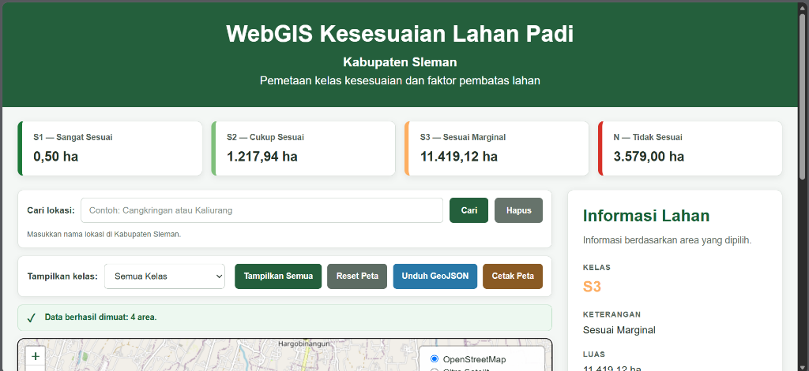
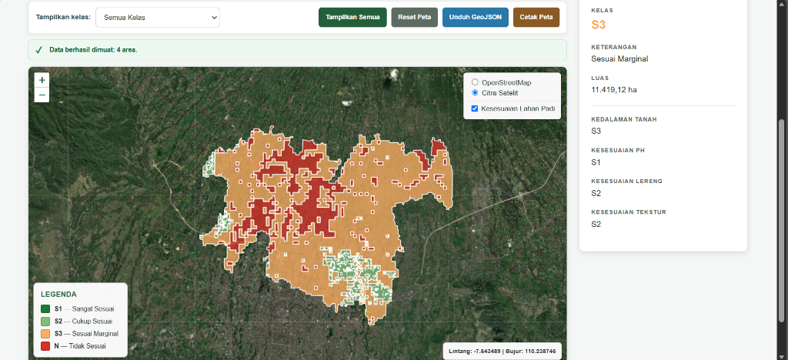
Proyek ini mengembangkan WebGIS interaktif untuk mengevaluasi kesesuaian lahan sawah irigasi di Kabupaten Sleman. Tujuan utamanya adalah mengintegrasikan berbagai karakteristik lingkungan yang memengaruhi kesesuaian lahan ke dalam satu analisis spasial, sehingga hasil akhirnya berupa peta zonasi yang menunjukkan tingkat kesesuaian setiap lokasi.
Pertanyaan yang Dikaji
Di mana lokasi yang memiliki kondisi lingkungan paling sesuai untuk pengembangan sawah irigasi? Mengintegrasikan parameter biofisik: Land Surface Temperature (LST Landsat-8), Soil pH, Soil Depth (SoilGrids BDTICM), Kelerengan (SRTM 30m), dan Tekstur Tanah.
Workflow & Evaluasi
Klasifikasi kesesuaian menggunakan pendekatan Liebig\'s Law of the Minimum, sehingga parameter yang paling membatasi menjadi faktor penentu kelas kesesuaian akhir (S1 Sangat Sesuai, S2 Cukup Sesuai, S3 Sesuai Marjinal, N Tidak Sesuai).
Developed an interactive decision-support WebGIS platform assessing irrigated paddy field suitability in Sleman Regency by fusing multivariable environmental datasets into an intuitive cloud web map.
Integrated Bio-Physical Parameters
- Thermal Environment: Landsat-8 Land Surface Temperature (LST).
- Edaphic Properties: SoilGrids global soil datasets (Depth to Bedrock / BDTICM, soil pH, and soil texture).
- Topography: Slope gradient derived from SRTM 30m DEM.
Multi-Criteria Evaluation (MCE)
Implemented Liebig\'s Law of the Minimum where the most restrictive ecological parameter determines the final suitability rating.
MEMBUAT PLUGINS
QGIS PLUGINS
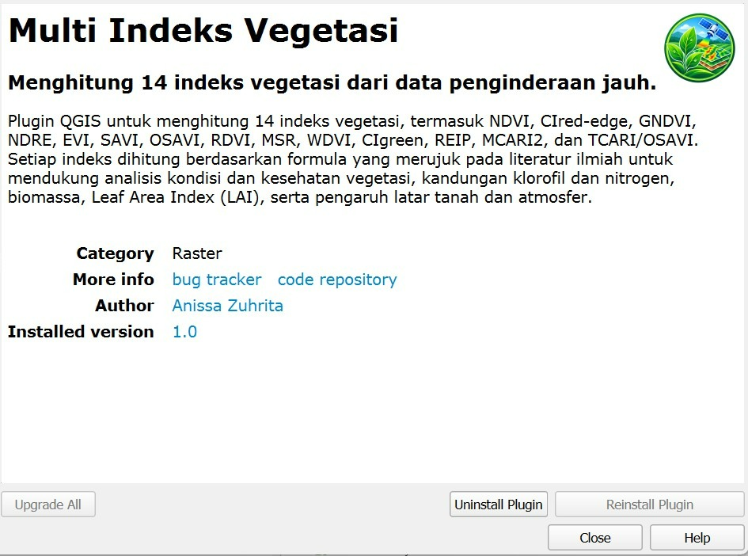
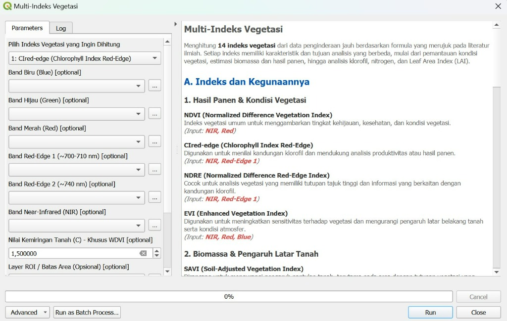
Saya mengembangkan QGIS Processing Plugin untuk menghitung 14 indeks vegetasi dari data multispektral secara lebih praktis dan terstruktur. Daripada menghitung formula secara manual satu per satu, saya mengemas formula ilmiah tersebut menjadi satu tool analitik yang dapat digunakan langsung di QGIS.
Plugin ini dirancang agar dapat digunakan untuk berbagai sumber citra multispektral, termasuk: Sentinel-2 · Landsat · PlanetScope · UAV Multispectral.
Apa yang Bisa Dilakukan?
- Vegetation Condition & Productivity: NDVI · EVI · CIred-edge · NDRE. Untuk melihat kondisi vegetasi, kehijauan, produktivitas, dan karakteristik tajuk.
- Biomass & Soil Background: SAVI · OSAVI · WDVI · RDVI · MSR. Untuk analisis biomassa dan kondisi vegetasi dengan mempertimbangkan pengaruh latar belakang tanah.
- Chlorophyll & Nitrogen: GNDVI · CIgreen · TCARI/OSAVI. Untuk analisis yang berkaitan dengan kandungan klorofil dan status vegetasi.
- Vegetation Structure & LAI: REIP · MCARI2. Untuk analisis struktur tajuk dan parameter vegetasi seperti Leaf Area Index (LAI).
Fitur Utama
- Dynamic Band Mapping: Pengguna dapat memetakan band input sesuai kebutuhan indeks yang dipilih tanpa harus mengubah formula manual.
- 14 Indeks dalam Satu Workflow: Diimplementasikan berdasarkan referensi ilmiah sehingga perhitungan konsisten.
- ROI-Based Processing: Memasukkan ROI vector untuk membatasi area analisis.
- Robust Raster Processing: Penanganan NoData; division by zero; invalid pixel values; dan efisiensi memori.
Engineered an open-source QGIS Processing Plugin automating the computation of 14 scientific vegetation indices across multispectral satellite and drone platforms (Sentinel-2, Landsat-8/9, PlanetScope, and UAV multispectral sensors).
Supported Spectral Indices
- Canopy Greenness & Health: NDVI, EVI, CIred-edge, NDRE.
- Soil-Adjusted & Biomass: SAVI, OSAVI, WDVI, RDVI, MSR.
- Chlorophyll & Nutrients: GNDVI, CIgreen, TCARI/OSAVI.
- Canopy Structure & LAI: REIP, MCARI2.
Key Features
- Dynamic band mapping interface allowing custom sensor channel assignment.
- Vector ROI clipping and memory-efficient chunked NumPy matrix calculations.
- Robust edge-case handling for zero-division, invalid pixels, and NoData masks.
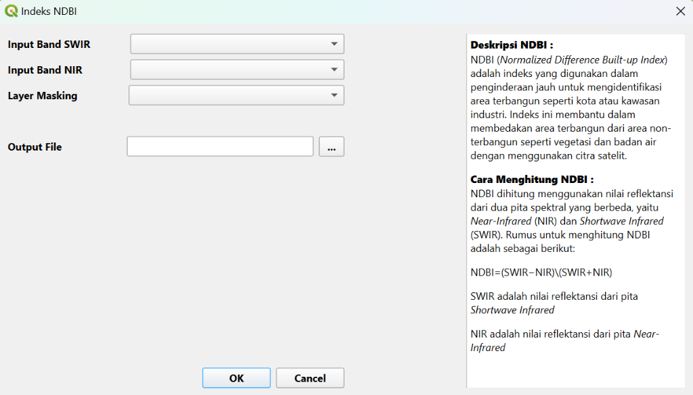
Perancangan dan implementasi plugin QGIS untuk mengotomasi pipeline kalkulasi Normalized Difference Built-up Index (NDBI) – indeks penginderaan jauh yang digunakan untuk mengidentifikasi kawasan terbangun. Plugin ini dirancang untuk menyederhanakan workflow analis GIS: dari seleksi data input, kalkulasi indeks, pemotongan raster sesuai wilayah kajian, hingga visualisasi hasil secara otomatis di QGIS.
- Membuat GUI berbasis PyQt dengan combobox untuk seleksi input Band SWIR, Band NIR, dan Layer Masking secara dinamis.
- Kalkulasi NDBI otomatis via QGIS Raster Calculator menggunakan formula:
(SWIR - NIR) / (SWIR + NIR). - Pemotongan raster hasil kalkulasi menggunakan vector masking layer yang ditentukan pengguna.
- Manajemen output: pengguna bebas menentukan lokasi penyimpanan dan nama file hasil.
- Visualisasi langsung: layer NDBI hasil clip otomatis ditambahkan ke QGIS project aktif.
Engineered a custom QGIS plugin automating the end-to-end processing pipeline for the Normalized Difference Built-up Index (NDBI) to rapidly map urban footprint and impervious surfaces.
- Interactive PyQt-based graphical user interface with dynamic input layer selection.
- Automated raster computation applying the mathematical index formula:
(SWIR - NIR) / (SWIR + NIR). - Automated spatial clipping to user study boundaries and automatic layer rendering into the active QGIS map canvas.
SPEAKER
SPEAKER
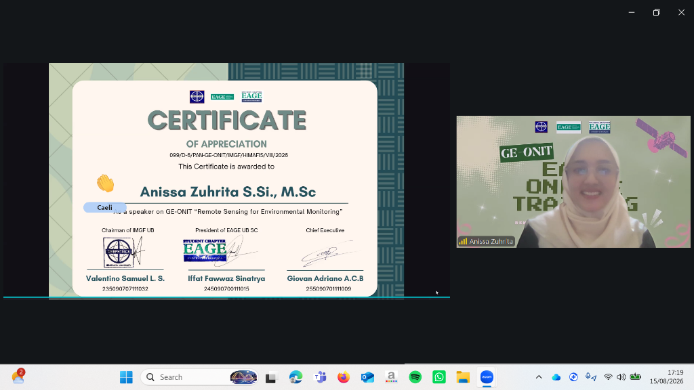
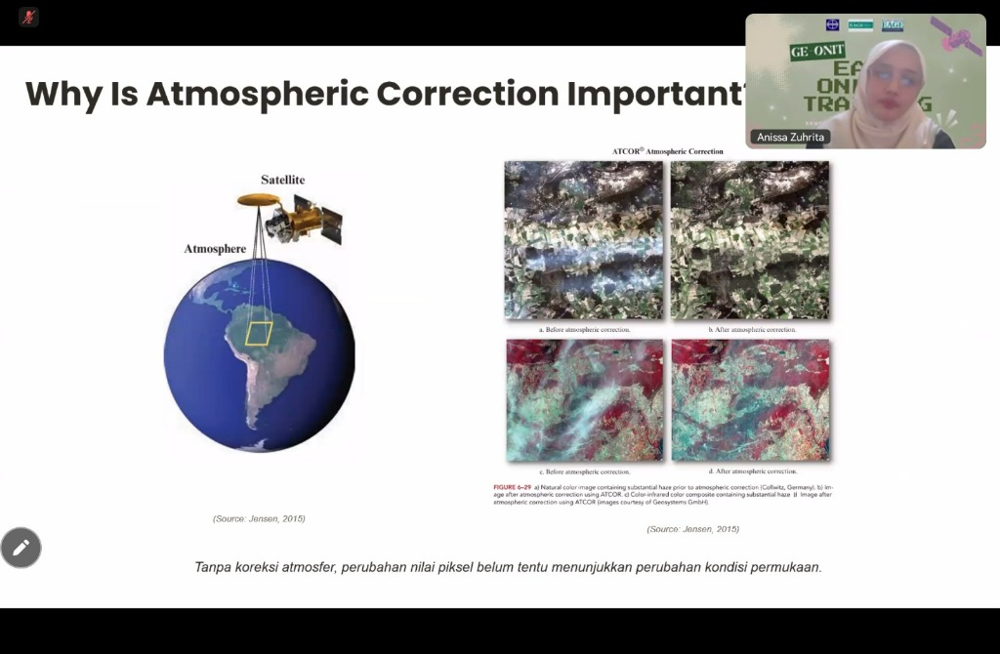
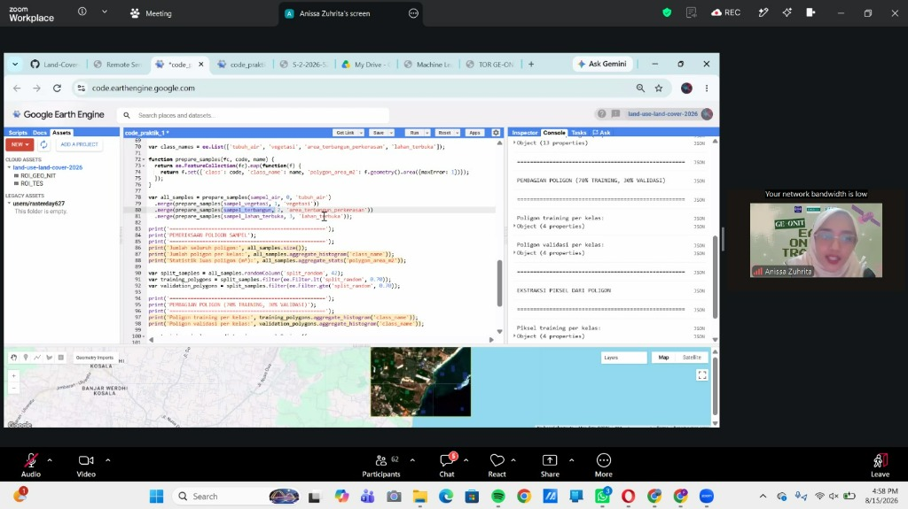
Saya diundang menjadi narasumber dalam GE-ONIT (Geophysics Online Training) 2026 untuk menyampaikan materi “Remote Sensing for Environmental Monitoring”. Materi dirancang dengan pendekatan konseptual hingga aplikatif, membekali peserta dengan pemahaman tentang bagaimana data penginderaan jauh diproses, diinterpretasikan, dan diterjemahkan menjadi informasi lingkungan untuk mendukung analisis dan pengambilan keputusan.
Lima Lapisan Pemahaman
- 01 — Memahami Data: Energi elektromagnetik → sensor → band → piksel → nilai digital.
- 02 — Memahami Respons Objek: Memahami bagaimana karakteristik fisik dan kimia objek, seperti air, klorofil, dan tekstur, memengaruhi respons spektralnya.
- 03 — Mengubah Citra Menjadi Informasi: Menggunakan pendekatan visual, multispektral, temporal, spasial, dan supporting data untuk menginterpretasikan informasi dari citra.
- 04 — Memahami Metode Klasifikasi: Menentukan metode analisis sesuai tujuan dan karakteristik data.
- 05 — Membangun Workflow Nyata: Menerapkan alur pengolahan citra secara end-to-end, mulai dari pemilihan data dan fitur, klasifikasi, hingga uji akurasi.
Dari Konsep ke Hands-on
Peserta tidak hanya diarahkan untuk menghasilkan output akhir, tetapi memahami alasan di balik setiap tahapan dalam workflow analisis. Random Forest digunakan sebagai metode untuk menjawab tujuan klasifikasi, dengan penekanan bahwa pemilihan metode harus didasarkan pada karakteristik data dan tujuan analisis.
Served as Invited Speaker for GE-ONIT (Geophysics Online Training) 2026, delivering the keynote session on “Remote Sensing for Environmental Monitoring”. The training was structured from core concepts to practical implementation, equipping participants with the knowledge to process, interpret, and translate satellite remote sensing data into actionable environmental insights for decision-making.
Core Framework: 5 Layers of Satellite Analytics
- 01 — Understanding Data: Electromagnetic energy → sensor → band → pixel → digital value.
- 02 — Understanding Object Response: Understanding how physical and chemical characteristics of targets (water, chlorophyll, texture) influence spectral signatures.
- 03 — Transforming Imagery into Information: Leveraging visual, multispectral, temporal, spatial, and ancillary data approaches to interpret satellite information.
- 04 — Understanding Classification Methods: Determining appropriate analytical workflows aligned with research objectives and data characteristics.
- 05 — Building Real-World Workflows: Implementing end-to-end satellite image processing—from data & feature selection to classification and rigorous accuracy assessment.
Hands-on GEE Cloud Pipeline
Participants were guided not merely to produce end outputs, but to deeply understand the rationale underpinning every stage of the analytical workflow. Random Forest was applied as a classification method with emphasis that algorithm selection must always be grounded in dataset characteristics and research objectives.
Terbuka untuk peluang karir, kolaborasi riset, dan proyek GIS & Penginderaan Jauh.
Open to career opportunities, research collaborations, and GIS & Remote Sensing projects.
Mari berkolaborasi.
Let’s collaborate.